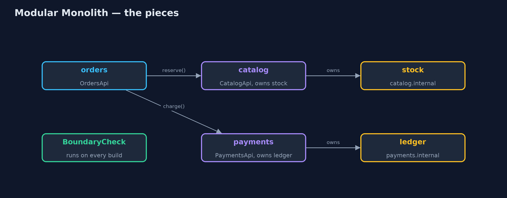
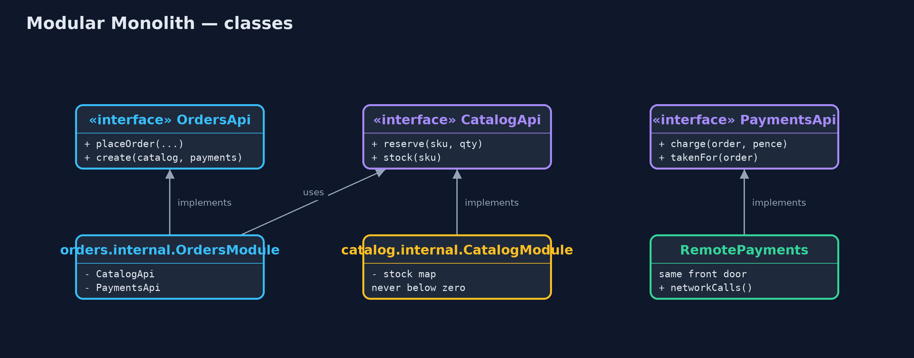
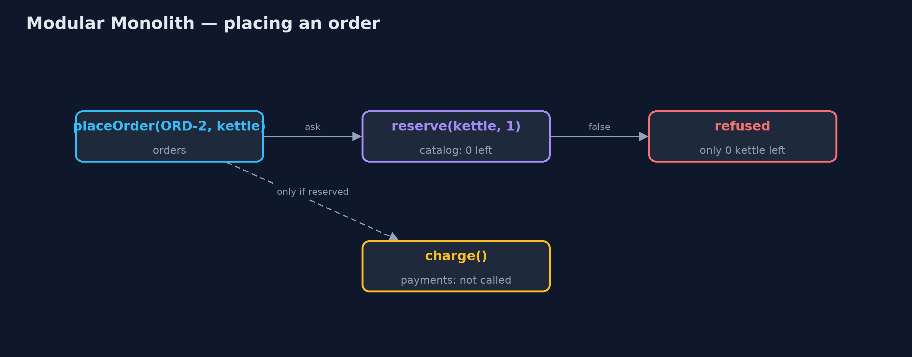
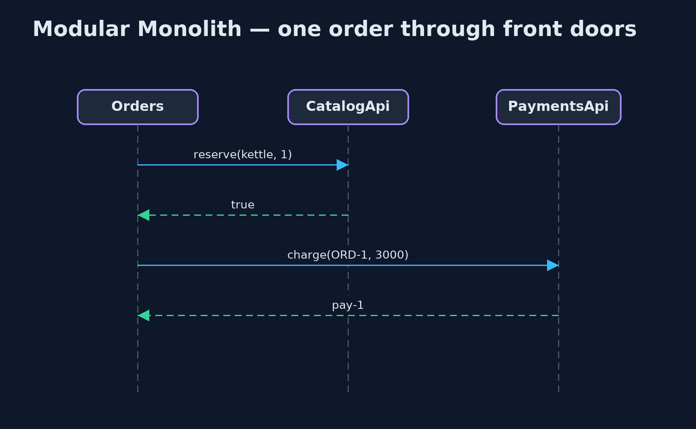

Modular Monolith Pattern
src/main/java/com/jk/explore/modularmonolith/
├── BoundaryCheck.java Checks the rule Java cannot: code in one module may not use another module's internal package
├── ModularMonolithDemo.java The five acts: the ball of mud, modules with front doors, the boundary check, moving a module out, and the bill
├── catalog/CatalogApi.java The catalogue module's front door: the only way other modules may touch stock
├── catalog/internal/CatalogModule.java Inside the catalogue: owns the stock table and its rule that stock never goes below zero
├── mud/MudCheckout.java Checkout in the big ball of mud: writes straight into the stock and payment tables
├── mud/Tables.java Without the pattern: every table is public, so any part of the shop can read and change any of them
├── orders/OrdersApi.java The orders module's front door
├── orders/internal/OrdersModule.java Inside orders: reserves stock through the catalogue's front door, then charges through payments'
├── payments/PaymentsApi.java The payments module's front door: take a payment, or ask what was taken
├── payments/RemotePayments.java Payments after it has been moved into its own service: the same front door, now over the network
└── payments/internal/PaymentsModule.java Inside payments: its own ledger, which no other module can seeBuild one program, but split it into modules that own their data and talk only through front doors, and check those walls on every build.
A monolith is a program that is built and deployed as one piece. A modular monolith is still one piece, but inside it is divided into modules, such as catalogue, orders and payments. Each module owns its own data and its own rules, and offers a small public front door, an API. Other modules may only use that front door, never the module's insides.
It gives you most of the tidiness of microservices without the network, the separate deployments and the distributed failures. And because every module is already behind a front door, one of them can later be moved into its own service without rewriting the others.
The idea in everyday terms
Think of a department store. It is one building, with one front entrance and one set of opening hours. But the shoe department has its own staff and its own stockroom, and the kitchenware department does not wander into it to take boxes off the shelves. They ask at the counter.
If the shoe department ever grows big enough to need its own shop across the road, it can move, and the kitchenware staff still just ask at a counter.
The scenario
The online store is one Java program. Checkout, the catalogue and payments all lived in the same code with every table open to every class. Checkout changed the stock table directly, skipping the catalogue's rule that stock never goes below zero, and the shop sold one kettle to two customers.
Run
./gradlew runThe demo tells the story in 5 acts, each printing exact numbers that the tests check:
| Act | What it shows |
|---|---|
| 1. Every table open | Checkout writes the stock table itself; one kettle in stock is sold twice and stock becomes -1. |
| 2. Modules with front doors | Orders reserves through CatalogApi: ORD-1 placed, ORD-2 refused with only 0 left; stock stays at 0. |
| 3. Boundaries checked | Scanning the source finds 0 modules reaching inside another; an added import of payments.internal into orders is caught. |
| 4. Moving a module out | RemotePayments replaces the in-process module: ORD-3 placed with 1 network call, and 0 lines changed in orders. |
| 5. The bill | 3 modules, 1 build, 1 deployment; one process that crashes and scales as a whole; walls that last only while checked. |
Test
./gradlew test9 tests in DemoRunsTest, ModulesTest. Every number the demo prints is asserted, and nothing depends on the clock, so every run gives the same result.
Technologies and versions
| Technology | Version | Used for |
|---|---|---|
| Java | 21 | the code (toolchain set in build.gradle) |
| Gradle | 9.2.1 (wrapper) | build and run, nothing to install |
| JUnit | 5.10.2 | the tests |
| videokit | repository tool | the narrated video and animation: Piper en_US-amy-medium, speed 0.8, longer pauses (the approved amy-slow voice) |
Learning Material
| Document | What it is for |
|---|---|
| Problem statement | the situation and what the project must show |
| Prerequisites | what you need to know first |
| Modular Monolith, explained | the acts in prose |
| Session guide | a one-hour lesson with exercises |
| Animated walkthrough | the acts step by step, narrated |
| Spec | what this project must be true of |
The pattern in one picture
One program; three modules; every arrow goes through a front door.

Where each piece sits
Public interfaces in each module's top package; implementations in internal.

How the data moves
Stock is reserved before any money is taken; a refusal stops the order.

Who calls whom, in order
Orders never sees stock or the ledger, only the answers.

Video
video/modular-monolith-pattern-explained.mp4 (with .m4a audio and .srt subtitles) is built by video/build_video.sh. Rendered media is not committed.
What it costs
- Still one deployment. A fix to payments redeploys the catalogue and orders too.
- Still one process. A crash or a memory leak in one module stops all of them, and they scale together.
- Walls need checking. Java lets any public class be used from anywhere; without a check on every build, the walls quietly disappear.
- Front doors take design. Deciding what each module offers, and what it keeps inside, is real work.
When this is too much
A small program with one team and one kind of data does not need modules beyond ordinary packages. And when parts genuinely need separate deployment, separate scaling or separate teams releasing on their own schedule, that is the point at which a module becomes a microservice.
Where you have already met this
- Java's own module system (
module-info.java), withexportsnaming the public packages. - ArchUnit tests that fail the build when one package uses another it should not.
- Spring Modulith, which checks module boundaries in Spring Boot applications.
- Shopify's and GitHub's large monoliths, split into internal components.
Where this sits
This project is in architectural-design-patterns, next to Layered Architecture, which slices a program into layers across it, and Hexagonal Architecture, which puts front doors (ports) around a single core. A modular monolith slices by business area instead.